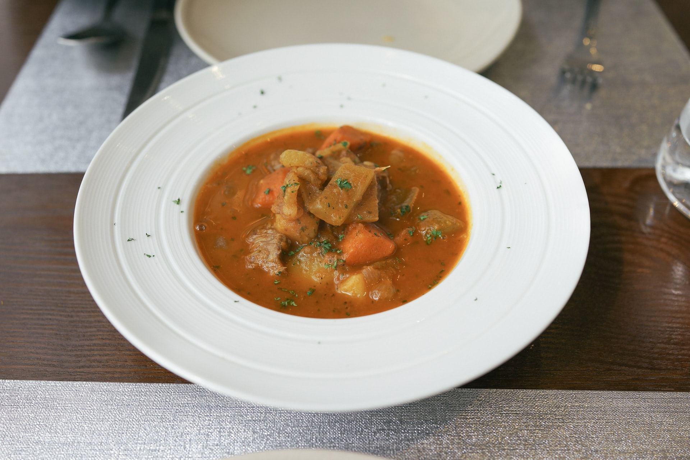

Recommended Food: Beef Stew

On a cloudy and cool night, how about a bowl of warm stew?
Ingredients
- 2 tablespoons vegetable oil
- 1 pound beef stew meat, cut into bite-size pieces
- 1/4 teaspoon salt
- 4 cups assorted cut-up fresh vegetables (potatoes, carrots, celery, and onions)
- 1 can (14 oz each) lower sodium beef broth
- 1 can (8 oz each) Hunt's® Tomato Sauce with Basil, Garlic and Oregano
Steps
- Heat 1 tablespoon oil in large skillet or saucepan over medium-high heat. Add meat and salt; cook 5 minutes, stirring until browned on all sides. Remove from skillet; keep warm.
- Add remaining 1 tablespoon oil and vegetables to skillet. Cook 5 minutes or until crisp-tender, stirring occasionally. Return meat to skillet; stir in broth. Bring to a boil. Reduce heat to medium-low; simmer 15 minutes, stirring occasionally.
- Stir in tomato sauce; simmer 15 minutes more or until meat and vegetables are tender, stirring occasionally.